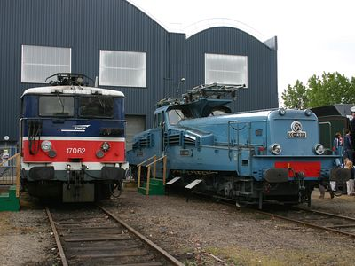

Locomotives à courant monophasé
Expérimenté à partir des années 50, le courant monophasé à fréquence industrielle a rapidement démontré ses qualités par rapport au 1500 V continu. Moins de pertes, une infrastructure plus légère et économique et la possibilité de fournir une énergie très élevée ont étendu son utilisation sur toutes les nouvelles électrifications de la seconde moitié du XXe siècle, hormis les prolongements de lignes électrifiées en continu ou le contre-exemple notable du RER RATP.
En raison de grandes ressources de houille à disposition et du fait que l'électrification pouvait constituer une vulnérabilité stratégique pour des régions jouxtant l'Allemagne ennemie, les compagnies de l'Est et du Nord avaient développé pleinement la technologie Vapeur, il fallut attendre le déclin de celle-ci pour voir s'étendre les caténaires dans le Nord-Est de la France. Ce fut naturellement du 25 kV 50 Hz. Le réseau Ouest, utilisant du 750 V continu par troisième rail pour sa banlieue, resta longtemps dépendant de la traction Diesel sur ses grandes lignes. Le passage à l'électricité se fit donc également au profit du monophasé.
Voici donc les machines qui peuplent le nord de la France de Cherbourg à Strasbourg.
BB 12000
BB 13000
CC 14000
CC 14100
BB 15000
BB 16000
BB 16100
BB 16500
BB 17000

CC 14018 et BB 17062 : deux générations de locomotives à courant alternatif
lors des JPO des ateliers de Lens (11/06/2005)